Capítulo 1. Por qué programar prompts
Programar un ordenador y programar un modelo de lenguaje son actos distintos. Al primero se le dicta una secuencia de instrucciones deterministas; al segundo se le ofrece un texto —el prompt— que condiciona una distribución de probabilidad sobre sus posibles respuestas. Esa diferencia, que parece de grado, es de naturaleza, y de ella arranca todo el libro. Un prompt no es código: es evidencia que inclina al modelo hacia una conducta que ya posee. El problema revela una contradicción de fondo: la industria escribe esa evidencia a mano, la afina por ensayo y error y la trata como un artefacto acabado, cuando la teoría del aprendizaje en contexto y las leyes de escala apuntan en sentido contrario.
Este capítulo fundamenta la tesis del libro: el prompt debe dejar de escribirse y pasar a compilarse. Para sostenerlo no basta la intuición; se recorre la teoría que la respalda —cómo condiciona un modelo, por qué funcionan las demostraciones, cuán frágil resulta el ajuste manual, qué dice la lección amarga— y se llega a una formulación precisa del autoajuste como un problema de optimización. El recorrido no es un rodeo erudito: cada pieza de teoría fija una decisión de ingeniería posterior. La inferencia bayesiana implícita dicta qué se optimiza; la fragilidad documentada dicta por qué no se hace a mano; las leyes de escala dictan hacia dónde apostar. Al cerrar, el lector entenderá no solo que conviene programar prompts, sino por qué la alternativa está condenada a no escalar.
El tono es deliberadamente denso. Se asume familiaridad con probabilidad, con los rudimentos del aprendizaje automático —riesgo empírico, sobreajuste, conjuntos de validación— y con el manejo práctico de modelos de lenguaje. No se explican preliminares; se va al mecanismo, al compromiso de diseño y al estado del campo.
El prompt como condicionamiento: una formalización
Conviene empezar por la definición de un modelo de lenguaje, porque de ella se deduce todo lo demás. Un modelo autorregresivo define una distribución de probabilidad sobre secuencias de tokens. Dado un vocabulario \(V\) y una secuencia \(\mathbf{x}=(x_1,\dots,x_n)\) con \(x_i\in V\), el modelo de parámetros \(\theta\) factoriza la probabilidad conjunta por la regla de la cadena, \[\begin{equation} \mathbb{P}_{\theta}(\mathbf{x}) = \prod_{i=1}^{n} \mathbb{P}_{\theta}(x_i \mid x_{<i}), \qquad x_{<i} = (x_1,\dots,x_{i-1}). \end{equation}\] Cada factor \(\mathbb{P}_{\theta}(x_i\mid x_{<i})\) es una distribución categórica sobre \(V\), obtenida al normalizar con \(\mathop{\mathrm{softmax}}\) las puntuaciones de la última capa. Generar texto es muestrear repetidamente de esa distribución condicionada por el prefijo ya producido.
Ahí reside la idea entera del prompt: el prefijo no es un dato accesorio, es el mando. Para resolver una tarea que transforma una entrada \(\mathbf{x}\) en una salida \(\mathbf{y}\), se antepone un contexto \(\mathbf{c}\) y se muestrea \[\begin{equation} \mathbf{y} \sim \mathbb{P}_{\theta}\!\left(\,\cdot \mid \mathbf{c}\oplus\mathbf{x}\right), \end{equation}\] donde \(\oplus\) representa la concatenación. El prompt es ese \(\mathbf{c}\), y construirlo es elegir un punto en un espacio de textos que reconfigura la distribución de salida sin tocar \(\theta\). La diferencia con el entrenamiento es tajante: entrenar mueve \(\theta\) y altera la función; hacer prompting mantiene \(\theta\) fijo y solo cambia el punto en que se la evalúa.
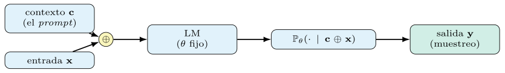
La figura 1.1 resume esa mecánica: el prompt es la palanca que reconfigura la distribución sin tocar \(\theta\).
Se denomina prompting a la construcción de un contexto \(\mathbf{c}\) que condiciona la distribución \(\mathbb{P}_{\theta}(\cdot\mid \mathbf{c}\oplus\mathbf{x})\) hacia la conducta deseada, con los parámetros \(\theta\) congelados. El prompt no modifica el modelo: selecciona, entre las conductas que el modelo ya codifica, la que se quiere evocar.
La distinción importa porque delimita el alcance del prompt: lo posible y lo vedado. No puede dotar al modelo de una capacidad ausente de \(\theta\): ningún contexto enseña un idioma que el modelo no vio. Sí puede localizar y amplificar una conducta latente, desplazando masa de probabilidad hacia las salidas correctas. Por eso un prompt bien construido no «explica» la tarea en el sentido humano; la evoca. Esta lectura —que la sección 1.2 convierte en teoría— ya anticipa una consecuencia incómoda para la artesanía: si el contexto evoca en vez de enseñar, la redacción exacta importa menos que la elección de la evidencia presentada.
El contexto, además, no es monolítico. Una taxonomía hoy estándar (Liu et al. 2023) distingue en \(\mathbf{c}\) una instrucción, un conjunto de demostraciones y un formato, junto a la consulta. Cada componente tira de la distribución en una dirección, y entre ellos hay interacciones: una instrucción nítida reduce la dependencia de las demostraciones; un formato estricto acota el espacio de salidas plausibles. La pregunta que organiza el libro es quién construye \(\mathbf{c}\) y cómo —una persona que teclea y retoca, o un programa que lo deriva de una especificación y lo ajusta contra datos—. La primera vía es la dominante; la segunda, la que aquí se defiende. El resto del capítulo muestra que la segunda no es una preferencia estética, sino la conclusión a la que obliga la teoría.
La forma de muestrear de la ecuación (1.1) introduce un mando adicional. Cada paso normaliza las puntuaciones \(z_v\) de la última capa con una temperatura \(\tau\), \[\begin{equation} \mathbb{P}_{\theta}(x_i = v \mid x_{<i}) = \frac{\exp(z_v/\tau)}{\sum_{w\in V}\exp(z_w/\tau)} . \end{equation}\] Con \(\tau\to 0\) el muestreo se vuelve determinista —se elige siempre el token de mayor puntuación, el régimen voraz—; al crecer \(\tau\), la distribución se aplana y la salida gana variedad y riesgo. La temperatura no cambia \(\theta\) ni el contexto \(\mathbf{c}\): redistribuye la masa que el modelo ya asigna.
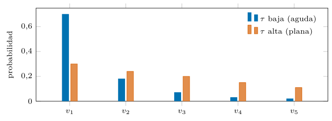
La figura 1.2 ilustra ese aplanamiento (ecuación (1.3)). De aquí salen dos consecuencias para el resto del libro. La primera, que la salida es una variable aleatoria salvo en el límite voraz, y por eso toda métrica medida sobre ella hereda una varianza que habrá que cuantificar (sección 1.9). La segunda, que medir la variabilidad de un sistema exige elevar \(\tau\) y desactivar la caché, mientras que perseguir reproducibilidad pide el régimen opuesto: dos objetivos en tensión que se resuelven por separado.
Una breve historia.
Conviene situar la tesis en una línea temporal, porque programar prompts es el último eslabón de una tendencia larga: el conocimiento humano se desplaza, una y otra vez, hacia capas más altas y más automatizadas. En la primera era, la del aprendizaje automático clásico, ese conocimiento vivía en los rasgos: un experto diseñaba a mano las variables que el modelo consumía, y el sistema se limitaba a ponderarlas. La pericia estaba en la ingeniería de rasgos.
La segunda era trasladó el conocimiento del rasgo al gradiente. Con el preentrenamiento y el ajuste fino, un modelo grande se entrena sobre un corpus general y luego se especializa moviendo sus pesos sobre los datos de cada tarea. El experto deja de diseñar variables y pasa a curar datos y a supervisar el ajuste; el modelo aprende la representación por sí mismo.
La tercera era nace con el aprendizaje en contexto. Un modelo lo bastante grande resuelve una tarea descrita en el prompt, sin mover un solo peso (Brown et al. 2020), y de ahí surge el prompt engineering: el conocimiento se codifica ahora en el texto del contexto. Pronto se advierte que ese texto es más un programa que un conjuro —de ahí la expresión prompt programming (Reynolds y McDonell 2021)— y que su forma desbloquea capacidades, como muestra la cadena de pensamiento al hacer explícito el razonamiento intermedio (Wei et al. 2022a). El paradigma queda sistematizado bajo el lema «preentrenar, instruir, predecir» (Liu et al. 2023).
La cuarta era es la de este libro: preentrenar y compilar. El conocimiento deja de teclearse en el contexto y pasa a declararse en una especificación que un optimizador realiza, primero con el marco Demonstrate–Search–Predict (Khattab et al. 2022) y después con DSPy (Khattab et al. 2024). Cada era automatiza la anterior: del rasgo al gradiente, del gradiente al contexto, del contexto al compilador. Ver el prompt como un artefacto que se escribe a mano es quedarse en la tercera era cuando ya existe la cuarta.
| Era | Conocimiento en | El experto | Mecanismo |
|---|---|---|---|
| aprendizaje clásico | los rasgos | diseña variables | ponderar rasgos |
| preentrenar y ajustar | el gradiente | cura datos | mover \(\theta\) |
| contexto | el prompt | lo escribe a mano | condicionar, \(\theta\) fijo |
| compilar | la especificación | declara y mide | optimizar el prompt |
La tabla 1.1 ordena esa progresión: del rasgo al gradiente, del gradiente al contexto, del contexto al compilador.
El aprendizaje en contexto
La eficacia de las demostraciones dentro de \(\mathbf{c}\) descansa en un fenómeno descrito al presentarse los modelos de gran escala: el aprendizaje en contexto (in-context learning, ICL). El trabajo que populariza el término entrena un modelo de 175 mil millones de parámetros —diez veces mayor que cualquier modelo de lenguaje denso anterior— y muestra que, descrita la tarea y ofrecidos unos pocos ejemplos en el prompt, el modelo resuelve casos nuevos sin ningún ajuste de pesos, solo con la especificación textual y las demostraciones (Brown et al. 2020). La adaptación ocurre por entero en la pasada hacia delante.
Conviene medir cuánto rompe esto con el aprendizaje automático clásico. En el paradigma habitual, adaptar un modelo a una tarea exige datos etiquetados, una función de pérdida y un proceso de optimización que mueve los pesos; el resultado es un modelo nuevo. En el aprendizaje en contexto no hay ninguna de esas tres cosas: ni pérdida, ni gradiente, ni pesos nuevos. El mismo modelo, con los mismos parámetros, exhibe conductas distintas según el contexto que se le antepone. Es como si un programa cambiara de comportamiento no al recompilarlo, sino al cambiarle los datos de entrada —y, sin embargo, esos «datos» codifican una tarea, no un caso—. La figura 1.3 contrasta ambos regímenes.
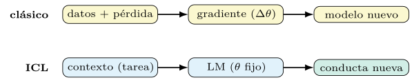
El fenómeno, además, aparece con la escala: el mismo estudio observa que la ventaja del régimen de pocos ejemplos sobre el de cero ejemplos se ensancha con el tamaño del modelo (Brown et al. 2020). Esa dependencia no es anecdótica: es la primera señal de que el aprendizaje en contexto pertenece a la familia de capacidades que las leyes de escala gobiernan, asunto que la sección 1.8 retoma; la figura 1.4 dibuja ese ensanchamiento. Comprender qué sucede en esa pasada hacia delante no es un lujo especulativo: determina qué parte del prompt pesa y, por tanto, qué debe optimizar un compilador. Si lo decisivo fuera la redacción literal de la instrucción, habría que optimizar texto; si lo fueran las demostraciones, habría que optimizar su selección. La respuesta condiciona el diseño entero, y por eso merece tres lecturas detenidas.
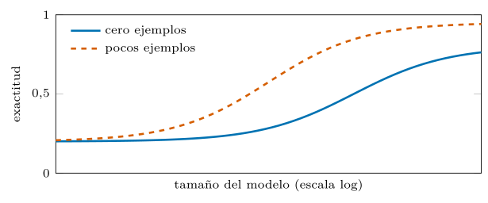
Tres lecturas del fenómeno.
Ninguna de las tres explicaciones que siguen es definitiva, y no se excluyen entre sí: iluminan caras distintas del mismo hecho. Importan aquí porque las tres, por caminos diferentes, desembocan en la misma moraleja de ingeniería (tabla 1.2).
| Lectura | Idea central | Implicación de ingeniería |
|---|---|---|
| inferencia bayesiana | infiere el concepto | elegir demos representativas |
| cabezas de inducción | copia patrones | mantener el formato estable |
| descenso implícito | la pasada \(\approx\) GD | las demos son datos |
Inferencia bayesiana implícita.
La primera lectura entiende el preentrenamiento como el aprendizaje de una mezcla sobre conceptos latentes. Sea \(z\) una variable latente que indexa una tarea, un estilo o un dominio; el corpus de preentrenamiento se modela como una mezcla, \[\begin{equation} \mathbb{P}(\mathbf{x}) = \int \mathbb{P}(\mathbf{x}\mid z)\,\mathbb{P}(z)\,dz, \end{equation}\] donde \(\mathbb{P}(z)\) es una distribución sobre conceptos y \(\mathbb{P}(\mathbf{x}\mid z)\) genera texto coherente con el concepto \(z\). Un modelo que ajusta bien (1.4) ha aprendido, implícitamente, a representar y a separar esos conceptos. Bajo este prisma, al recibir unas demostraciones \(\mathcal{D}\) en el contexto, el modelo no memoriza un mapa entrada–salida: infiere el concepto compatible con ellas y predice marginalizando, \[\begin{equation} \mathbb{P}_{\theta}(\mathbf{y}\mid \mathbf{x}, \mathcal{D}) \;\approx\; \int \mathbb{P}_{\theta}(\mathbf{y}\mid \mathbf{x}, z)\, \mathbb{P}(z\mid \mathcal{D})\,dz . \end{equation}\] Las demostraciones actúan como evidencia que afila la posterior \(\mathbb{P}(z\mid\mathcal{D})\) en torno al concepto correcto (figura 1.5); cuanto más nítida la posterior, más fiable la predicción (Xie et al. 2022). El aprendizaje en contexto se interpreta así como inferencia bayesiana implícita: el modelo ya contiene las tareas, y el contexto selecciona entre ellas.
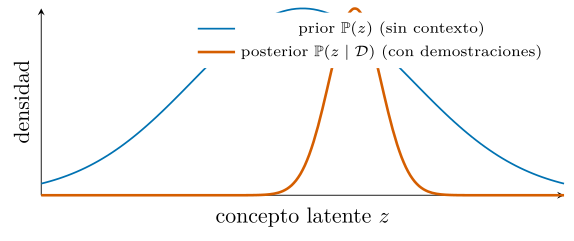
Esta lectura tiene una predicción comprobable y algo contraintuitiva. Si las demostraciones sirven como evidencia sobre \(z\), entonces las señales que ayuden a identificar el concepto —el formato, el espacio de etiquetas, la distribución de las entradas— deberían pesar más que la corrección de cada par concreto. La sección 1.2 muestra que la evidencia empírica confirma justamente eso.
La marginalización de la ecuación (1.5) explica además por qué más demostraciones ayudan, hasta cierto punto. Si las \(k\) demostraciones de \(\mathcal{D}\) son condicionalmente independientes dado el concepto, la posterior factoriza como \[\begin{equation} \mathbb{P}(z\mid\mathcal{D}) \;\propto\; \mathbb{P}(z)\,\prod_{j=1}^{k}\mathbb{P}(d_j\mid z). \end{equation}\] Cada nuevo ejemplo \(d_j\) añade un factor que premia a los conceptos compatibles con él y penaliza al resto; al crecer \(k\), el producto concentra la masa en el concepto \(z^\star\) que mejor explica todas las demostraciones, y la posterior se estrecha (figura 1.5). El modelo de Xie et al. (2022) levanta este argumento sobre un proceso latente de tipo cadena oculta, donde el preentrenamiento aprende las transiciones y el contexto hace de evidencia. La predicción operativa es nítida: el factor que más afila la posterior es la calidad de la señal de cada demostración sobre el concepto —su formato y su representatividad—, no su mera cantidad, y de ahí que añadir ejemplos redundantes rinda cada vez menos.
Cabezas de inducción.
La segunda lectura es mecanicista y desciende al circuito. El estudio de los componentes internos del transformer identifica las cabezas de inducción: cabezas de atención que completan patrones de la forma \([A][B]\dots[A]\to[B]\), esto es, que localizan la aparición previa del token actual y copian la continuación que entonces siguió. Una cabeza así implementa, en miniatura, la regla «si ya viste esto, sigue como seguiste la última vez», que es el núcleo de copiar un patrón desde el contexto.
El hallazgo decisivo es temporal: la formación de estas cabezas durante el entrenamiento coincide con un cambio brusco —una pequeña inflexión en la curva de pérdida— a partir del cual la capacidad de aprendizaje en contexto da un salto, señal de que sostienen buena parte del fenómeno (Olsson et al. 2022). Donde la lectura bayesiana describe qué computa el modelo —una posterior sobre conceptos—, esta describe con qué maquinaria lo hace. Ambas coinciden en el punto que aquí interesa: la información del contexto se reutiliza por reconocimiento de patrón, no por reentrenamiento, y el sistema es por tanto sensible a la forma del patrón que se le presenta.
Localización de tareas, no meta-aprendizaje.
La tercera lectura es empírica y más incómoda para la artesanía del prompt. Dos resultados la sostienen. El primero: un prompt de cero ejemplos bien formulado puede igualar o superar a uno de pocos ejemplos, de modo que las demostraciones sitúan una tarea que el modelo ya conoce, antes que enseñarla (Reynolds y McDonell 2021). El segundo, más sorprendente: al sustituir las etiquetas correctas de las demostraciones por etiquetas aleatorias, el rendimiento apenas cae, y el efecto se mantiene de forma consistente en doce modelos distintos, GPT-3 incluido. El sostén del aprendizaje en contexto no es el mapa exacto entrada–etiqueta, sino tres rasgos de las demostraciones: el espacio de etiquetas posible, la distribución de las entradas y el formato de la secuencia (Min et al. 2022).
El resultado conviene leerlo con cuidado para no exagerarlo: no afirma que las etiquetas correctas sobren en toda tarea, sino que su contribución es mucho menor de cuanto la intuición supone, y que otros factores —los tres rasgos— dominan. Encaja con la lectura bayesiana: si las demostraciones son evidencia sobre el concepto \(z\), son el formato y la distribución, no la corrección puntual, los que identifican el concepto. La correspondencia precisa de cada demostración pesa poco; su papel como muestra del tipo de tarea pesa mucho.
Una moraleja operativa.
Las tres lecturas convergen en un corolario que gobierna el resto del libro: el contenido exacto de las demostraciones —su corrección caso a caso— importa menos que su estructura, su distribución y su selección. Y esos tres factores son precisamente la clase de objeto que un procedimiento de búsqueda optimiza bien y una persona, mal. Una persona redacta una demostración «buena» según su criterio; un optimizador prueba cientos de subconjuntos, órdenes y formatos y se queda con el que mide mejor. La conclusión no es estilística sino estratégica: las demostraciones se seleccionan y ordenan con un criterio medido, no se redactan a ojo. El capítulo 5 construye los algoritmos que lo hacen, y la sección siguiente muestra por qué la alternativa manual es además inestable.
Mecanismos y límites del aprendizaje en contexto
Las tres lecturas anteriores presuponen un mecanismo que conviene nombrar: la atención, el componente del transformer que permite a cada posición mirar a todas las demás y combinarlas según su relevancia (Vaswani et al. 2017). La atención convierte el contexto en una memoria de la que el modelo recupera, en cada paso, la información pertinente; es esa recuperación asociativa la que hace posible el aprendizaje en contexto, porque permite que una demostración del prompt influya en la respuesta a una consulta posterior sin que medie ningún ajuste de pesos.
Las cabezas de inducción de la sección 1.2 son un patrón concreto de uso de la atención: cabezas que aprenden a recuperar «la última vez que vi esto, ¿qué siguió?». Bajo esta luz, el prompt no es una orden que el modelo obedece, sino un contenido que la atención indexa y consulta. Esto explica por qué la posición y la forma de las demostraciones importan tanto —alteran qué recupera la atención— y por qué optimizar el prompt, qué se pone y en qué orden, es optimizar el contenido de esa memoria asociativa: una palanca tan real como ajustar los pesos, pero mucho más barata. La figura 1.6 esquematiza el circuito que lo hace posible.
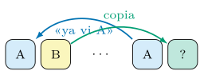
A, recupera aquello que siguió la vez anterior (B). El prompt no se obedece; su contenido se indexa y se consulta, y por eso su orden y su forma pesan.El ICL como optimización implícita.
Una cuarta lectura, más reciente, cierra el círculo con las anteriores. Bajo ciertas condiciones, la pasada hacia delante de un transformer puede simular un paso de descenso de gradiente sobre los ejemplos del contexto: la red, sin actualizar sus pesos, computa internamente algo equivalente a ajustar un modelo a las demostraciones (Oswald et al. 2023). El análisis con modelos lineales lo confirma: el aprendizaje en contexto implementa, en su interior, un algoritmo de aprendizaje reconocible (Akyürek et al. 2023).
La consecuencia conceptual es notable. Si la inferencia ejecuta una optimización implícita, la frontera entre «entrenar» y «hacer prompting» se difumina: las demostraciones del contexto actúan como datos de entrenamiento de un optimizador que vive dentro de la red. Esto reconcilia las tres lecturas previas —la bayesiana describe qué se infiere, las cabezas de inducción con qué maquinaria, y esta con qué algoritmo— y refuerza la tesis del libro: si el contexto es el conjunto de entrenamiento de ese optimizador interno, elegirlo bien —seleccionar y ordenar las demostraciones— es, literalmente, curar los datos de un aprendizaje, y eso se hace por búsqueda medida, no a mano. La figura 1.7 resume esta cuarta lectura.
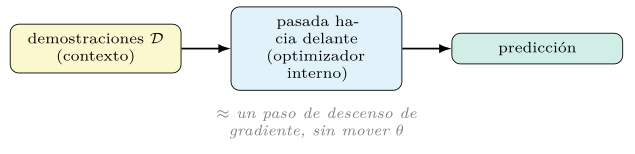
Qué no explican estas teorías.
Las tres lecturas anteriores son parciales y siguen en debate; conviene no sobrevenderlas, porque su propia incompletud encierra un argumento para el método del libro. La lectura bayesiana es una idealización: supone que el preentrenamiento aproxima una mezcla limpia sobre conceptos latentes, cuando un corpus real y un modelo real no se factorizan con esa nitidez. Explica por qué las demostraciones ayudan a identificar una tarea, pero dice poco sobre cómo el modelo ejecuta un razonamiento de varios pasos.
La lectura mecanicista comparte el límite. Las cabezas de inducción dan cuenta de la copia de patrones y del aprendizaje en contexto más simple (Olsson et al. 2022), pero un razonamiento encadenado —del estilo de la cadena de pensamiento (Wei et al. 2022a)— involucra circuitos que la mera copia no agota; las cabezas de inducción parecen necesarias, no obviamente suficientes para las tareas difíciles.
La lectura empírica pide la misma cautela. El resultado de que las etiquetas aleatorias apenas dañan se enuncia, en el propio trabajo, para un régimen concreto de tareas de clasificación (Min et al. 2022); su fuerza varía con la dificultad de la tarea y con el tamaño del espacio de etiquetas, de modo que «las etiquetas no importan» sería una lectura demasiado fuerte. La formulación prudente es la ya dada: en el régimen estudiado, el formato, la distribución y el espacio de etiquetas dominan sobre la corrección puntual.
La moraleja es metodológica. Si la teoría disponible no predice con fiabilidad qué prompt funcionará en una tarea y un modelo concretos, la única vía honesta es medir y optimizar contra esa medición. La incompletud de la teoría no debilita la tesis del libro: la refuerza, porque es justo el motivo por el que la búsqueda empírica resulta una necesidad y no un capricho. La tabla 1.3 resume qué explica y qué no cada lectura.
| Lectura | Explica | No explica |
|---|---|---|
| bayesiana | identificar la tarea | el razonamiento multipaso |
| cabezas de inducción | copiar patrones | el razonamiento encadenado |
| empírica (etiquetas) | formato \(>\) corrección | las tareas difíciles |
| optimización implícita | frontera entrenar/prompt | el caso real |
La fragilidad del ajuste manual, con evidencia
Si las demostraciones funcionan localizando una tarea, un cambio de superficie puede desplazar esa localización de forma desproporcionada. La literatura lo documenta con precisión, y dos resultados bastan para desarmar la confianza en el ajuste a mano.
El primero es la sensibilidad al orden. Manteniendo idénticas las demostraciones y variando solo su orden, la exactitud se mueve desde cerca del estado del arte hasta cerca del azar; peor aún, las buenas ordenaciones no se distinguen de las malas sin una señal de validación independiente (Lu et al. 2022). Los autores idean un remedio que no rompe el régimen de pocos ejemplos: con el propio modelo generan un conjunto de validación artificial y, midiendo la entropía de las predicciones sobre las distintas permutaciones, eligen las ordenaciones prometedoras sin usar ninguna etiqueta reservada; el método rinde un 13 % de mejora relativa para la familia GPT en once tareas de clasificación. La oscilación denota dos cosas: el orden importa mucho y, para acertarlo, hace falta medir. La figura 1.8 muestra esa oscilación.
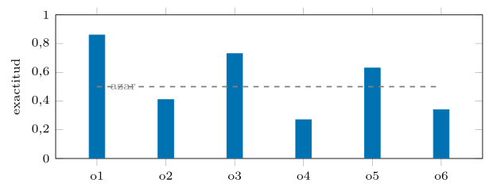
El segundo son los sesgos sistemáticos de calibración. Los modelos favorecen ciertas respuestas por razones ajenas a la tarea: la etiqueta situada cerca del final del prompt (cercanía), la asociada a tokens frecuentes en el preentrenamiento (frecuencia) y la mayoritaria entre las demostraciones. Esa descalibración es predecible y, de hecho, corregible: estimando el sesgo con una entrada neutra —un caso «sin contenido», como N/A— y ajustando la salida para que sea uniforme sobre ese caso, la calibración contextual mejora la exactitud hasta en 30 % absoluto y, sobre todo, reduce la varianza entre distintas elecciones de prompt (Zhao et al. 2021). El practicante que afina a mano persigue, sin saberlo, ese sesgo del modelo en vez de la tarea. La tabla 1.4 resume los tres sesgos y su causa.
| Sesgo | Causa |
|---|---|
| recencia | la etiqueta situada cerca del final del prompt |
| frecuencia | etiquetas de tokens frecuentes en el preentreno |
| mayoría | la clase dominante entre las demostraciones |
Estas evidencias reformulan, con respaldo, las tres patologías del prompt manual:
Fragilidad. El objetivo es implícito: un retoque que parece cosmético desplaza una diana que nadie mide. La sensibilidad al orden y los sesgos de calibración son su rostro empírico.
Dependencia del modelo. La cadena pulida codifica las rarezas de un modelo; al cambiar de proveedor o de versión, esos supuestos tácitos dejan de cumplirse y el rendimiento se desploma sin aviso.
No mantenibilidad. El motivo por el que el prompt dice algo vive en la cabeza de quien lo escribió, no en el artefacto, y se evapora con la persona.
El veredicto es severo y conviene enunciarlo sin rodeos: afinar cadenas a mano optimiza contra artefactos de un modelo concreto, sin objetivo medido, y por eso no puede garantizarse que generalice ni que perdure. Ninguna de las tres patologías se cura escribiendo cadenas mejores; se curan cambiando el objeto que se manipula y, sobre todo, introduciendo medición. La sección siguiente nombra esa enfermedad con el vocabulario del aprendizaje automático.
El prompt manual como sobreajuste.
Conviene traducir el diagnóstico anterior al lenguaje del aprendizaje automático, porque allí el remedio ya es conocido. Cuando alguien redacta un prompt y lo retoca observando unos pocos ejemplos hasta que «funciona», está ejecutando, a mano, un proceso de optimización: ajusta un objeto —la cadena— para minimizar un error observado sobre un puñado de casos. La diferencia con el aprendizaje automático no es de naturaleza, sino de higiene: el practicante optimiza sobre un conjunto diminuto, sin separar entrenamiento de prueba y sin cuantificar el error. Es el escenario de manual del sobreajuste.
El paralelismo es exacto. El prompt es el parámetro; los ejemplos que el practicante mira al retocar son el conjunto de entrenamiento; la métrica que nunca calcula es la pérdida; el rendimiento en casos no vistos es el error de generalización. Optimizar a ojo sobre cinco ejemplos memorizados produce un prompt de varianza altísima: rinde en esos cinco y se derrumba fuera, igual que un modelo con demasiada capacidad ajustado a pocos datos. La sensibilidad al orden (Lu et al. 2022) denota precisamente esa varianza.
De esta traducción se siguen, sin misterio, los remedios que el aprendizaje automático ya codificó. Hace falta un conjunto de validación independiente para estimar la generalización; una métrica explícita que convierta «funciona» en un número; y un procedimiento de optimización que explore el espacio de forma sistemática en vez de por corazonadas. Programar prompts no es más que aplicar a la construcción de \(\mathbf{c}\) la disciplina que el campo exige para cualquier otro ajuste de parámetros. El resto del capítulo formaliza esa disciplina y muestra que el espacio a explorar es demasiado grande para la mano humana.
El marco del aprendizaje automático ofrece, además, el vocabulario exacto para cuantificar el daño. El error esperado de un prompt se descompone, como el de cualquier estimador, en sesgo y varianza: el sesgo mide cuánto se aleja en promedio de la conducta deseada, y la varianza, cuánto oscila al cambiar de muestra, de orden o de modelo. El ajuste a mano sobre un puñado de ejemplos reduce el sesgo aparente en esos ejemplos a costa de una varianza enorme —la que delatan la sensibilidad al orden y los sesgos de calibración ya vistos—. La optimización contra un conjunto reservado ataca justo esa varianza: al seleccionar el prompt por su rendimiento en datos no usados para ajustarlo, descarta las configuraciones que solo brillaban por azar. Es el mismo principio que la validación cruzada en el aprendizaje automático clásico, aplicado al texto del prompt en lugar de a los pesos.
De la artesanía al programa
La historia de la programación es una sucesión de capas que ocultan el detalle de la inferior. Se pasó del lenguaje máquina al ensamblador, y de este a los lenguajes de alto nivel con sus compiladores, de modo que el programador declara una intención y delega su traducción en un proceso automático y reproducible. La teoría de lenguajes nombra esa frontera: la especificación —el qué— se separa de la implementación —el cómo—, y un compilador busca una implementación que satisfaga la especificación. La programación declarativa lleva esa separación al extremo: se enuncia la relación que debe cumplirse, no el procedimiento que la calcula. Una consulta SQL declara qué filas se quieren, no cómo recorrer los índices; el motor decide el cómo y lo optimiza.
Escribir prompts a mano se sitúa hoy en el nivel del ensamblador: se opera sobre la representación final, cadena a cadena, sin una capa que separe la intención de su realización. Quien lo hace mezcla, en un mismo texto, qué quiere —clasificar, extraer, razonar— con cómo lo pide —estas palabras, estos ejemplos, este formato—, y al mezclarlos pierde la posibilidad de optimizar el cómo sin tocar el qué. La propuesta del libro repite el movimiento histórico (figura 1.9): se declara la intención en una firma tipada, se compone en módulos, y un compilador —en la jerga del campo, un optimizador o teleprompter— genera y ajusta el prompt final.
La idea no nace con DSPy. Su precursor, el marco Demonstrate–Search–Predict, ya planteaba componer recuperación y generación como un programa antes que como una cadena (Khattab et al. 2022); DSPy la consolida en un marco coherente de firmas, módulos y optimizadores (Khattab et al. 2024). Tres definiciones fijan el vocabulario que el resto del libro usa sin descanso.
Una firma (signature) declara la conducta de un módulo como una relación tipada entre campos de entrada y de salida —por ejemplo, texto -> etiqueta—, sin fijar el texto del prompt que la realiza. La firma expresa el qué; el cómo queda delegado en el compilador.
Un módulo es una unidad componible que realiza una firma mediante una estrategia de inferencia —predicción directa, razonamiento intermedio, uso de herramientas—. Los módulos se encadenan en programas, y el programa entero —no cada prompt por separado— es la unidad que se optimiza.
Un optimizador (o teleprompter) es el compilador del sistema: dado un programa, una métrica y unos datos, busca las instrucciones y las demostraciones que maximizan la métrica y devuelve el mismo programa con esos prompts ya ajustados. No edita texto a mano; explora un espacio.
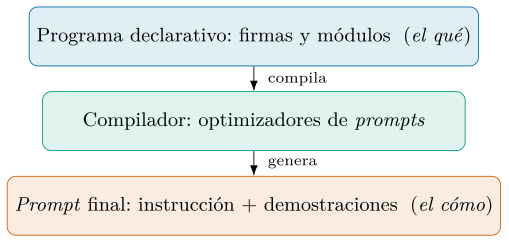
El autoajuste como minimización del riesgo.
La capa de compilación se formaliza como un problema de optimización, y la formalización aclara de golpe por qué la mano humana no basta. Sea \(M_\pi\) un programa cuya conducta depende de un prompt parametrizado \(\pi=(\text{instrucciones}, \text{demostraciones})\), que vive en un espacio \(\Pi\). Sea \(\mu(\hat{\mathbf{y}},\mathbf{y})\) una métrica que puntúa una predicción contra la referencia, y \(\mathcal{D}\) un conjunto de ejemplos. El autoajuste busca el prompt que maximiza la métrica esperada sobre la distribución de la tarea, aproximada por su media empírica sobre los datos: \[\begin{equation} \pi^{\star} \;=\; \mathop{\mathrm{arg\,máx}}_{\pi\in\Pi}\; \frac{1}{\lvert\mathcal{D}\rvert} \sum_{(\mathbf{x},\mathbf{y})\in\mathcal{D}} \mu\!\bigl(M_\pi(\mathbf{x}),\,\mathbf{y}\bigr). \end{equation}\] La ecuación (1.7) es la maximización del riesgo empírico —el reverso de la minimización de pérdida del aprendizaje automático— trasladada al espacio de los prompts.
Un programa es autoajustable cuando un optimizador resuelve aproximadamente la ecuación (1.7): modifica \(\pi\) —instrucciones y demostraciones— guiado por la métrica medida sobre datos, sin intervención manual en el texto generado.
La ecuación parece inocente y esconde toda la dificultad del campo, en tres frentes. Primero, \(\Pi\) es discreto, no diferenciable y de dimensión enorme: no hay gradiente que seguir, así que las técnicas de optimización continua no aplican y hay que recurrir a búsqueda de caja negra. Segundo, cada evaluación del sumatorio cuesta llamadas reales al modelo, con su precio monetario y su latencia; la eficiencia muestral del optimizador —cuántas evaluaciones gasta para hallar un buen \(\pi\)— es por tanto una restricción de diseño, no un detalle de implementación. Tercero, y más sutil, cuando \(M_\pi\) encadena varios módulos, la métrica solo observa la salida final.
Este tercer punto merece detenerse, porque es donde el problema deja de parecer trivial. Imagínese un programa de dos módulos: uno recupera contexto relevante y otro razona sobre él para responder. Si la respuesta final es incorrecta, ¿la culpa fue de una recuperación pobre o de un razonamiento defectuoso? La métrica, que solo ve la respuesta, no lo dice. Atribuir el mérito o la culpa a cada prompt intermedio es un problema de asignación de crédito, análogo al del aprendizaje por refuerzo, y los optimizadores de DSPy lo abordan arrastrando las trazas de ejecución de los intentos exitosos: cuando el programa completo acierta, se conservan como demostraciones las entradas y salidas intermedias que condujeron al acierto (figura 1.10). Así, la señal de la salida final se propaga hacia atrás, a cada módulo, sin necesidad de una etiqueta intermedia. Los capítulos 5 y 6 desarrollan las familias de optimizadores que abordan estos tres obstáculos.
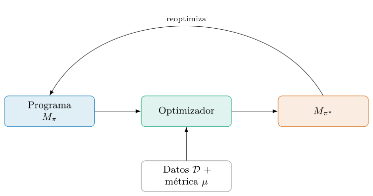
Conviene separar dos cantidades que la ecuación (1.7) confunde por comodidad. El objetivo verdadero es el riesgo poblacional, la métrica esperada sobre la distribución real de la tarea, \[\begin{equation} R(\pi) = \mathbb{E}_{(\mathbf{x},\mathbf{y})\sim \mathcal{P}} \bigl[\mu(M_\pi(\mathbf{x}),\mathbf{y})\bigr], \end{equation}\] del que solo se observa su estimación empírica \(\hat{R}(\pi)\) sobre la muestra \(\mathcal{D}\). El optimizador maximiza \(\hat{R}\), pero la cantidad que importa es \(R\); la diferencia \(R(\pi)-\hat{R}(\pi)\) es la brecha de generalización, y maximizar \(\hat{R}\) sobre el mismo conjunto con que luego se juzga el resultado la infla. De ahí la higiene obligatoria: optimizar sobre entrenamiento, elegir hiperparámetros sobre validación y reportar sobre una prueba intacta. Sin esa separación, un optimizador potente no mejora el sistema: lo sobreajusta con más eficiencia que la mano humana.
La segunda complicación es la composición. Un programa realista es una cadena de módulos, \(M_\pi = M_{\pi_L}\circ\cdots\circ M_{\pi_1}\), y la métrica solo observa la salida del último. No hay etiqueta para las salidas intermedias, de modo que el optimizador debe inferir qué configuración de cada \(\pi_\ell\) contribuyó al acierto final. La técnica que lo resuelve es el bootstrapping de trazas: se ejecuta el programa completo sobre el entrenamiento y, cuando la salida final supera el umbral de \(\mu\), se conservan las entradas y salidas de cada módulo en esa ejecución como demostraciones candidatas para él. La señal escasa de la salida se reparte así entre todos los módulos sin supervisión intermedia, en un eco de la asignación de crédito del aprendizaje por refuerzo. El capítulo 5 formaliza esta idea; el capítulo 6 la combina con la búsqueda de instrucciones.
El programa como grafo de cómputo.
La composición de módulos se formaliza como un grafo de cómputo dirigido y acíclico: cada nodo es un módulo \(M_{\pi_\ell}\), cada arista una dependencia de datos, y la salida final emana de recorrer el grafo (figura 1.11). Esta vista no es un adorno: precisa por qué la asignación de crédito es difícil. La métrica observa solo el nodo terminal, y la señal debe propagarse hacia atrás por las aristas hasta cada \(\pi_\ell\), sin etiquetas en los nodos intermedios.
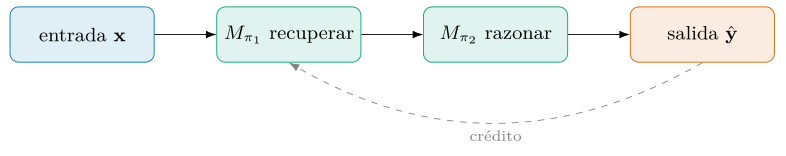
La formulación como grafo conecta DSPy con una tradición conocida: la diferenciación automática recorre un grafo de cómputo propagando gradientes. Aquí no hay gradiente —el espacio es discreto—, pero la estructura es la misma, y el bootstrapping de trazas (capítulo 5) hace las veces de retropropagación: conserva, de cada ejecución acertada, las entradas y salidas intermedias que la hicieron posible, y las reparte como demostraciones a cada nodo. Ver el programa como grafo aclara por qué optimizar el todo supera a optimizar cada módulo por separado: las aristas acoplan las decisiones.
El espacio de búsqueda de los prompts
El espacio de las demostraciones es combinatorio pero contable (ecuación (1.9)); el de las instrucciones es peor: es el lenguaje natural entero. No hay enumeración posible de las formas de redactar una orden, ni una métrica que diga cuán «cerca» están dos redacciones, de modo que la búsqueda no puede recorrerlo sistemáticamente. La salida que ha encontrado el campo es delegar la propuesta al propio modelo: pedirle que genere y refine instrucciones —meta-prompting—, con un LM como generador de candidatos en ese espacio inabarcable (Yang et al. 2023).
Esto plantea una recursión elegante: un modelo escribe los prompts de otro —o de sí mismo—, y un optimizador selecciona los que miden mejor. La evolución reflexiva lleva la idea más lejos, mutando las instrucciones a partir de una crítica en lenguaje de sus fallos (Agrawal et al. 2025). La lección para este capítulo es que las dos mitades del prompt —demostraciones e instrucción— exigen búsquedas de naturaleza distinta: combinatoria una, generativa la otra, y ambas fuera del alcance de la mano humana.
El espacio de búsqueda.
Conviene dimensionar por qué \(\Pi\) es intratable a mano, con números. Las instrucciones son texto en lenguaje natural: un espacio abierto, sin estructura métrica, donde dos redacciones casi idénticas pueden rendir de forma muy distinta. Las demostraciones añaden una explosión combinatoria que sí se puede contar. Elegir \(k\) ejemplos de un banco de \(N\) admite \(\binom{N}{k}\) subconjuntos, y la sección 1.4 mostró que cada subconjunto se puede presentar en \(k!\) órdenes con efectos no despreciables. El número de configuraciones de demostraciones a tantear crece, por tanto, como \[\begin{equation} \lvert\Pi_{\text{demo}}\rvert \;=\; \binom{N}{k}\,k! \;=\; \frac{N!}{(N-k)!}. \end{equation}\]
Conviene poner cifras. Con un banco modesto de \(N=200\) ejemplos y \(k=8\) demostraciones, la ecuación (1.9) da del orden de \(200\cdot199\cdots193\), esto es, más de \(10^{18}\) configuraciones distintas —un trillón de millones—. Aunque una persona evaluara una configuración por segundo sin descanso, tardaría más que la edad del universo en recorrerlas. Y esto solo cuenta las demostraciones: el espacio de instrucciones se superpone por multiplicación, y el producto se evalúa con una función ruidosa y cara, pues cada punto exige ejecutar el programa entero sobre \(\mathcal{D}\). La figura 1.12 dibuja ese crecimiento.
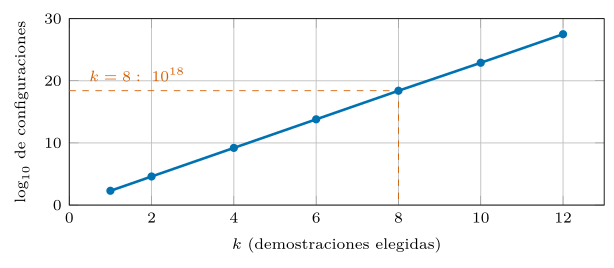
El diagnóstico es nítido. La optimización de prompts es búsqueda de caja negra sobre un espacio discreto, gigantesco y costoso de evaluar. Frente a eso, la artesanía explora unas pocas decenas de puntos guiada por la intuición, y peor aún, sin medir; un optimizador explora miles guiado por la medición, con estrategias —búsqueda aleatoria con poda, sustitutos bayesianos, evolución reflexiva— diseñadas para gastar pocas evaluaciones. El argumento no es que la intuición humana no sirva de nada, sino que, ante una cardinalidad de \(10^{18}\), no escala, y ninguna cantidad de talento individual cambia ese orden de magnitud. La figura 1.13 esquematiza ese bucle de proponer y medir, y la tabla 1.5 contrasta las dos maneras de recorrer el espacio.
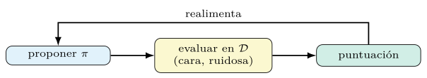
| Artesanía | Optimizador | |
|---|---|---|
| puntos explorados | decenas | miles |
| guía | la intuición | la medición |
| ¿mide? | no | sí |
| estrategia | retoque a ojo | búsqueda con poda |
A la cardinalidad hay que añadirle el precio de cada evaluación, el factor que vuelve la búsqueda no solo grande sino cara. Evaluar una sola configuración \(\pi\) exige ejecutar el programa sobre el conjunto: con \(\lvert\mathcal{D}\rvert=300\) ejemplos y un programa de dos módulos, son \(600\) llamadas al modelo por configuración. Un optimizador que tantee mil configuraciones gasta, pues, del orden de \(6\times10^{5}\) llamadas; a céntimos por llamada, la factura asciende a decenas o centenas de euros por una sola corrida de optimización. De ahí que la métrica relevante de un optimizador no sea solo la calidad que alcanza, sino la calidad por evaluación gastada: la eficiencia muestral deja de ser una virtud teórica y se vuelve la restricción que decide si un método es usable. Las familias de la sección siguiente se distinguen, sobre todo, por cómo administran ese presupuesto.
El paisaje de la optimización.
La ecuación (1.7) define un objetivo, pero no dice cómo es la superficie que se optimiza, y esa forma condiciona qué métodos sirven. El paisaje del espacio de prompts tiene tres rasgos hostiles. Es discreto: no hay vecindad continua por la que descender, así que no cabe el gradiente. Es multimodal: existen muchas formulaciones buenas separadas por valles de formulaciones malas, de modo que una búsqueda voraz se atasca en óptimos locales. Y es ruidoso: la evaluación de un punto es estocástica (capítulo 2), de modo que dos medidas del mismo prompt difieren, y distinguir una mejora real de una fluctuación exige repetir.
De estos tres rasgos se sigue la familia de métodos adecuada. Frente a un paisaje discreto, multimodal y ruidoso, la optimización continua no aplica; sirven en cambio la búsqueda con exploración —aleatoria, evolutiva— y los modelos sustitutos que estiman la superficie con pocas muestras. El equilibrio entre explorar formulaciones nuevas y explotar las buenas ya conocidas es la tensión central de los optimizadores de los capítulos 5 y 6, y la razón de que ninguno domine: cada uno resuelve ese equilibrio de una manera.
La optimización de caja negra.
La ecuación (1.7) y el paisaje hostil de la sección 1.6 sitúan la optimización de prompts en una familia bien estudiada: la optimización de caja negra, donde la función objetivo se evalúa pero no se deriva. Sin gradiente, el optimizador solo puede proponer un punto, medir su valor —con ruido— y decidir el siguiente. El dilema que enfrenta es el de exploración frente a explotación: gastar evaluaciones en regiones nuevas que podrían ser mejores, o refinar la mejor conocida.
Este encuadre conecta con métodos clásicos. La búsqueda aleatoria explora sin memoria; los bandidos de varios brazos asignan el presupuesto a las opciones más prometedoras conforme las prueban; la optimización bayesiana construye un modelo sustituto de la superficie para decidir dónde mirar con pocas muestras, que es la estrategia de MIPROv2 (Opsahl-Ong et al. 2024; Akiba et al. 2019). Ver la compilación de un prompt como optimización de caja negra no es una metáfora: es la categoría formal que dicta qué algoritmos sirven, y por qué la eficiencia muestral —rendimiento por evaluación— es su figura de mérito.
Los optimizadores y su economía
El espacio de la sección anterior no se recorre a ciegas: existen familias de optimizadores, cada una con una estrategia distinta para gastar pocas evaluaciones. Se anticipan aquí en su forma conceptual; los capítulos 5 y 6 las desarrollan con su coste y sus parámetros.
El bootstrapping de demostraciones parte del propio programa: se ejecuta sobre ejemplos de entrenamiento, se conservan las trazas que la métrica aprueba y esas trazas se inyectan como demostraciones, de modo que el sistema aprende de sus propios aciertos (Khattab et al. 2024). La búsqueda de instrucciones, en cambio, optimiza el texto de la orden: un modelo propone variantes y se queda con la que mide mejor, en un ascenso por coordenadas heredado de la idea de usar un LM como optimizador (Yang et al. 2023).
La optimización conjunta da un paso más. En lugar de tratar instrucciones y demostraciones por separado, las aborda a la vez con un surrogate bayesiano que decide, sobre minilotes, qué configuración probar a continuación, fundando las propuestas en el contexto de la tarea (Opsahl-Ong et al. 2024; Akiba et al. 2019). La evolución reflexiva sustituye el muestreo por una población que muta y se selecciona sobre un frente de Pareto, guiada por una crítica en lenguaje natural de los fallos, con notable eficiencia muestral (Agrawal et al. 2025). La tabla 1.6 ordena las cuatro familias por su objeto y su estrategia.
| Familia | Optimiza | Estrategia |
|---|---|---|
| Bootstrapping | demostraciones | trazas que aprueba la métrica |
| Búsqueda de instr. | la orden | un LM propone y se mide |
| Optim. conjunta | ambas | surrogate bayesiano |
| Evolución reflexiva | instrucciones | población y frente de Pareto |
Ninguna de estas familias domina a las demás en todo escenario; la elección depende del presupuesto, de la métrica y de la estructura del programa —es un caso del principio de que no hay almuerzo gratis—. Su rasgo común es la forma: todas resuelven aproximadamente la ecuación (1.7), y solo difieren en cómo exploran \(\Pi\) con un número acotado de evaluaciones. Este capítulo justifica por qué hace falta esta maquinaria; los capítulos 5 y 6 la construyen.
La economía de la optimización.
Programar prompts tiene una estructura de costes que conviene explicitar, porque decide si la inversión renta. El coste de compilación —ejecutar el optimizador— es único y se paga por adelantado: depende del número de candidatos evaluados y del tamaño del conjunto de validación, y puede ascender a decenas de euros (capítulo 2). El coste de inferencia —cada llamada en producción— es recurrente y se multiplica por el volumen. Y el coste de mantenimiento reaparece cada vez que el entorno cambia y hay que reoptimizar. La tabla 1.7 distingue los tres.
| Coste | Cuándo | Escala con |
|---|---|---|
| Compilación | una vez, por adelantado | candidatos y validación |
| Inferencia | cada llamada | volumen de producción |
| Mantenimiento | cada cambio del entorno | frecuencia de cambio |
La decisión se reduce a una amortización. La compilación se justifica cuando su coste único se reparte entre suficientes inferencias: una tarea que se ejecutará un millón de veces amortiza con holgura una optimización cara; una de un solo uso, no. Por eso la frontera del capítulo —cuándo conviene DSPy— es, en el fondo, económica: programar prompts renta cuando la tarea se repite y su calidad se mide, y la optimización deja de ser un lujo para volverse una inversión con retorno calculable. La figura 1.14 dibuja ese umbral.
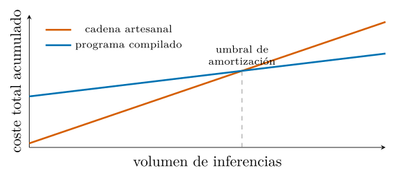
Escala, emergencia y la lección amarga
Hay, por fin, un argumento de tendencia que subsume a los anteriores. Sutton (2019) resume seis décadas de investigación en una tesis incómoda: los métodos generales que aprovechan el cómputo —la búsqueda y el aprendizaje— terminan superando a los que codifican conocimiento humano a mano, y la ventaja se ensancha conforme el cómputo se abarata. La historia de la visión por ordenador, del ajedrez y del propio procesamiento del lenguaje repite el patrón: las soluciones artesanales rinden primero y son superadas después por métodos que escalan con los recursos.
La regularidad tiene hoy respaldo cuantitativo. Las leyes de escala muestran que la pérdida de un modelo de lenguaje decrece de forma predecible, como una ley de potencias, con el tamaño del modelo, el volumen de datos y el cómputo de entrenamiento; la regularidad se sostiene a lo largo de más de siete órdenes de magnitud y resulta casi insensible a detalles de arquitectura, como la proporción entre anchura y profundidad (Kaplan et al. 2020). Cómo repartir un presupuesto de cómputo dado lo precisa el análisis de entrenamiento óptimo: el número de parámetros y el de tokens de entrenamiento deben crecer a la par —al doblar el tamaño del modelo conviene doblar los datos—, y un modelo de 70 mil millones de parámetros entrenado así supera a otros de 280 e incluso 530 mil millones entrenados con menos datos (Hoffmann et al. 2022). La conclusión de ese trabajo es que los modelos grandes de la época estaban «significativamente subentrenados»: la capacidad no es un don fijo, es una función creciente y previsible de los recursos bien repartidos.
El prompt artesanal denota el lado equivocado de esa curva (figura 1.15). Es conocimiento humano congelado en texto: rinde pronto y satura, porque su calidad está acotada por el tiempo y la perspicacia de una persona. Un optimizador que convierte datos y cómputo en mejores instrucciones y demostraciones es, en cambio, el método general que cabalga la escala: mejora mientras haya ejemplos y presupuesto, y se beneficia de cada modelo más capaz sin reescribir nada. Programar prompts es, en este sentido preciso, apostar por el lado correcto de la lección amarga. La intuición del autor conserva un papel —fija la métrica, aporta el punto de partida, diseña la firma—, pero deja de ser el techo del sistema.
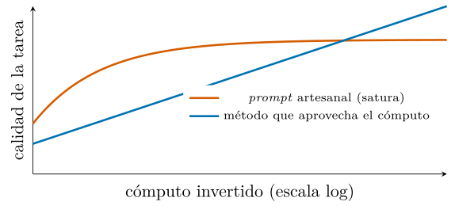
Conviene dar la forma precisa de esas leyes, porque su funcional importa tanto como su existencia. En el régimen sin saturación, la pérdida sigue una ley de potencias en cada recurso por separado, \[\begin{equation} L(N) \approx \Bigl(\tfrac{N_c}{N}\Bigr)^{\alpha_N}, \qquad L(D) \approx \Bigl(\tfrac{D_c}{D}\Bigr)^{\alpha_D}, \end{equation}\] con exponentes pequeños —del orden de \(\alpha_N\approx 0{,}076\) y \(\alpha_D\approx 0{,}095\) en el trabajo original (Kaplan et al. 2020)—. Que el exponente sea pequeño es la observación clave: duplicar el modelo no duplica la calidad, pero el avance no se detiene, y como el cómputo se abarata de forma sostenida, la mejora acumulada es enorme. El análisis posterior corrige cómo repartir un presupuesto fijo: parámetros y datos deben crecer a la par —en torno a veinte tokens de entrenamiento por parámetro—, y un modelo de \(70\) mil millones de parámetros entrenado con \(1{,}4\) billones de tokens —cuatro veces los datos de su rival— supera a otro de \(280\) mil millones peor entrenado (Hoffmann et al. 2022). La moraleja para el prompt no cambia, se afila: el rendimiento es una función creciente y predecible de los recursos bien gastados, y atarse a una cadena artesanal es renunciar a esa curva. La tabla 1.8 recoge las cifras del contraste.
| Modelo | Parám. (mil M) | Tokens (mil M) | Resultado |
|---|---|---|---|
| Gopher | 280 | 300 | subentrenado |
| MT-NLG | 530 | 270 | subentrenado |
| Chinchilla | 70 | 1400 | supera a ambos |
Capacidades emergentes.
Las leyes de escala describen una mejora suave, pero se ha observado también un fenómeno más abrupto: ciertas capacidades parecen emerger de golpe a partir de un tamaño de modelo, ausentes en los pequeños y presentes en los grandes (Wei et al. 2022b). Si fuera así, el comportamiento de un sistema basado en prompts sería impredecible: una tarea irresoluble con un modelo podría volverse trivial con el siguiente, sin aviso.
La afirmación, sin embargo, está en disputa, y la disputa enseña una lección de método. Un análisis influyente sostiene que muchas «emergencias» son un artefacto de la métrica: al medir con una función de todo o nada —acierto exacto—, una mejora gradual y continua del modelo se ve como un salto brusco; medida con una métrica suave, la misma capacidad crece de forma continua (Schaeffer et al. 2023). La moraleja conecta con el capítulo 4: la métrica no solo puntúa, también moldea aquello que creemos ver. Una elección descuidada de la medida puede inventar un fenómeno —una emergencia— donde solo hay una curva suave, y por eso medir con rigor es inseparable de programar con rigor. La figura 1.16 contrapone ambas medidas.
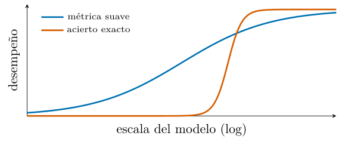
Evaluación, reproducibilidad y medición
La literatura de prompting arrastra una crisis de reproducibilidad que este libro toma como advertencia. Resultados que parecían sólidos se desvanecen al cambiar el orden de las demostraciones (Lu et al. 2022), al no calibrar el sesgo del modelo (Zhao et al. 2021) o, más sutil, al elegir una métrica que convierte una mejora gradual en un salto aparente (Schaeffer et al. 2023). Tres fuentes de fragilidad —el orden, la calibración, la métrica— bastan para que una cifra publicada no se sostenga en otra ejecución. La tabla 1.9 las recoge con su efecto.
| Fuente | Efecto sobre la cifra publicada |
|---|---|
| Orden de las demostraciones | de azar a estado del arte |
| Calibración del modelo | sesgo de recencia y de mayoría |
| Elección de la métrica | un salto donde hay una curva |
La consecuencia metodológica recorre todo el libro. Una afirmación empírica sobre un prompt solo vale si especifica el modelo y su versión, la semilla, el número de corridas y la métrica exacta, y si se reporta como media con desviación (capítulo 4). No es burocracia: es la diferencia entre una disciplina y una colección de anécdotas. Programar prompts hereda de la ciencia experimental la obligación de que un resultado sea, ante todo, repetible.
Medir antes de optimizar.
La ecuación (1.7) presupone una métrica \(\mu\) y unos datos \(\mathcal{D}\). Sin ellos no hay nada que maximizar, y por eso la medición no es una fase posterior sino el cimiento: un programa que no se mide no se puede compilar, igual que no se puede minimizar una pérdida que no se calcula. Esta exigencia trae dos cautelas que el capítulo 4 desarrolla.
La primera es la ley de Goodhart: en cuanto una métrica se vuelve objetivo, deja de ser un buen indicador, porque el optimizador explotará sus grietas con la misma diligencia con que busca aciertos. Una métrica de coincidencia exacta premiará respuestas correctas pero mal formateadas con un cero, y el optimizador aprenderá a formatear antes que a acertar; una métrica laxa premiará respuestas vacuas. Elegir \(\mu\) con cuidado —y vigilar el sobreajuste contra un conjunto reservado, como exige la sección 1.4— forma parte del diseño, no es un trámite. La figura 1.17 ilustra ese ciclo.
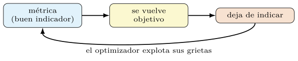
La segunda es la estocasticidad. Una métrica calculada sobre llamadas a un modelo es una variable aleatoria, no un número fijo: la misma evaluación, repetida, fluctúa con la temperatura y con cambios del modelo por la parte del proveedor. De ahí una norma que el libro mantiene sin excepción: toda cifra de calidad se reporta con su dispersión —media y desviación sobre varias corridas—, nunca como un único decimal que finja una precisión inexistente. Estas cautelas no debilitan la tesis; la vuelven honesta, y separan la ingeniería seria del entusiasmo anecdótico. La figura 1.18 contrasta cinco corridas sueltas con su resumen.
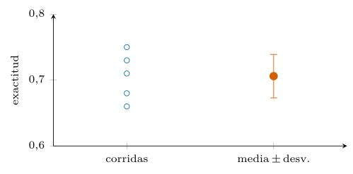
Un caso de extremo a extremo
Conviene cerrar la parte teórica con la silueta de un caso completo, sin entrar aún en cifras —que saldrán, medidas, de los capítulos empíricos—. Sea una clasificación de mensajes: el objetivo es asignar a cada texto una etiqueta. El método sigue, paso a paso, la disciplina que el capítulo ha justificado. Primero se declara la intención en una firma y se elige un módulo; aquí, uno con razonamiento intermedio. Después se parten los datos en entrenamiento, validación y prueba, y se define la métrica \(\mu\) que hará de objetivo. Con eso se mide un baseline sin optimizar —el programa ejecutado tal cual— y, a continuación, se compila:
import statistics
import dspy
clasificar = dspy.ChainOfThought("texto -> etiqueta")
evaluar = dspy.Evaluate(devset=desarrollo, metric=exactitud)
base = evaluar(clasificar) # baseline sin optimizar
opt = dspy.BootstrapFewShot(metric=exactitud)
compilado = opt.compile(clasificar, trainset=entrenamiento)
medidas = [evaluar(compilado) for _ in range(5)] # se repite por estocasticidad
media, desv = statistics.mean(medidas), statistics.stdev(medidas)El optimizador BootstrapFewShot genera demostraciones ejecutando el programa sobre el entrenamiento, conserva las trazas que elevan \(\mu\) y las fija en el prompt; el resultado es el mismo programa, ahora \(M_{\pi^\star}\), sin que se haya editado una sola cadena a mano (Khattab et al. 2024). Es el bucle de la figura 1.10 hecho código; la figura 1.19 ordena los pasos.
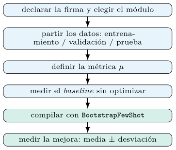
Dos detalles delatan la disciplina frente a la artesanía. La mejora se mide en un conjunto reservado y se reporta como media con desviación sobre varias corridas, nunca como un número único —la estocasticidad de la sección 1.9 lo exige—. Y la conducta declarada no cambió: cambió su realización, que ahora puede reoptimizarse al cambiar de modelo sin reescribir el programa. Los capítulos 3 a 6 ponen números reales a este esqueleto.
Programar, ajustar o recuperar
Programar prompts no es la única forma de adaptar un modelo a una tarea, y situarla en el espectro de alternativas aclara cuándo conviene. En un extremo está el prompting puro: se condiciona el modelo sin tocar sus pesos, con coste de adaptación casi nulo y efecto inmediato, pero acotado por cuanto el modelo ya sabe (definición 1.1). En el otro está el ajuste fino, que mueve los pesos sobre datos de la tarea: más potente para enseñar conductas nuevas, pero caro, hambriento de datos etiquetados y atado a un modelo concreto. Entre ambos median los métodos de ajuste eficiente, como la adaptación de bajo rango, que ajusta una fracción mínima de parámetros (Hu et al. 2022), y el ajuste por instrucciones con retroalimentación humana, que alinea el modelo base para que obedezca órdenes (Ouyang et al. 2022).
El criterio de elección es de recursos y de naturaleza del problema. Si la tarea cae dentro del territorio que el modelo ya domina y solo hay que evocarlo, el prompting optimizado gana por coste y portabilidad. Si exige una capacidad ausente del modelo —un dominio que no vio, un formato que no maneja—, el ajuste fino se justifica pese a su coste. A menudo la mejor arquitectura combina las dos: un modelo ajustado en el dominio, gobernado por prompts compilados. Este libro se ocupa de la capa de prompts, la más barata y portátil, y la que más rendimiento da por unidad de esfuerzo en el caso común. La tabla 1.10 y la figura 1.20 ordenan ese espectro.
| Método | Coste | Datos | Portabilidad |
|---|---|---|---|
| Prompting (cero/pocos ejemplos) | muy bajo | ninguno/pocos | alta |
| Prompting compilado (DSPy) | bajo | decenas–cientos | alta |
| Ajuste de bajo rango (LoRA) | medio | cientos–miles | media |
| Ajuste fino completo | alto | miles o más | baja |
| Alineación con feedback (RLHF) | muy alto | miles o más | baja |
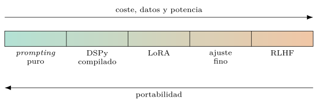
La recuperación como tercera vía.
El espectro de la sección 1.11 —del prompting al ajuste fino— tiene un tercer eje que conviene nombrar: la recuperación. En lugar de meter el conocimiento en los pesos (ajuste) o de evocarlo del que el modelo ya tiene (prompting), la generación aumentada por recuperación lo trae de una base externa en tiempo de inferencia y lo inserta en el contexto (Lewis et al. 2020). Es adaptación sin tocar el modelo y sin depender de su memoria: el conocimiento vive fuera, actualizable y citable.
Las tres vías no compiten, se combinan. Un sistema maduro ajusta el modelo a un estilo, recupera los hechos que cambian a diario y programa los prompts que orquestan ambas cosas. Para este libro, la recuperación importa por dos razones: es un módulo más que DSPy compone y optimiza (capítulo 7), y desplaza la carga del conocimiento del peso al contexto, donde la optimización de prompts —qué se recupera y cómo se presenta— vuelve a ser la palanca. La figura 1.21 compone las tres vías.
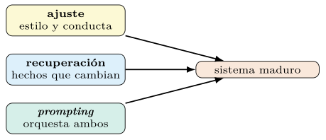
Intuición humana y deuda técnica
La lección amarga (sección 1.8) podría leerse como un descarte del juicio humano, y sería un error. La tesis afirma que el conocimiento artesanal no debe ser el techo del sistema, no que sea inútil. La intuición humana conserva tres papeles que ningún optimizador asume. Diseña la métrica, que codifica qué significa «bueno» y que el optimizador después explota al pie de la letra (capítulo 4). Aporta el punto de partida —una firma sensata, unas demostraciones semilla— desde el que la búsqueda arranca. Y fija las restricciones —de seguridad, de coste, de formato— dentro de las que la optimización opera. La figura 1.22 sitúa los tres papeles.
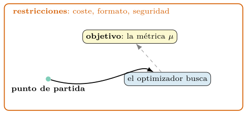
Hay, además, un régimen donde la intuición pesa más: el de pocos datos. Cuando no hay un conjunto de validación suficiente para guiar una búsqueda, el criterio experto es el mejor sustituto disponible, y conviene reconocerlo sin complejos. La tesis no es «la máquina sobre el humano», sino «la búsqueda medida sobre la corazonada, cuando hay con qué medir»; fuera de esa condición, el juicio humano recupera su sitio.
El prompt manual como deuda técnica.
La ingeniería de software tiene un nombre para los atajos que se pagan con intereses: deuda técnica. Un prompt escrito a mano es deuda técnica en estado puro. Funciona el primer día, pero cada cambio posterior —un modelo nuevo, una categoría más, un formato distinto— exige reabrirlo, retocarlo y revalidarlo a ojo, y ese coste reaparece sin amortizar. Como nadie midió su calidad, tampoco hay forma de saber si un retoque la mejoró o la empeoró: la deuda se acumula en la oscuridad.
El programa compilado salda esa deuda por construcción. Su calidad está medida, de modo que una regresión se detecta; su conducta está declarada, de modo que un cambio de modelo se absorbe recompilando; su estado está versionado, de modo que cualquier versión es reproducible. Programar prompts no es solo una mejora de calidad inicial: es una decisión de mantenibilidad, la misma que lleva a preferir código estructurado sobre un guion improvisado. La diferencia, invisible en la demostración, es la que decide el coste a lo largo de la vida del sistema. La figura 1.23 compara ambas trayectorias de coste.
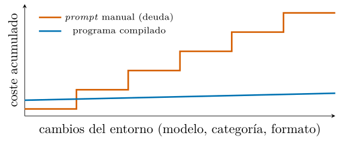
Cuándo conviene DSPy
Toda la argumentación anterior podría leerse como una defensa incondicional de programar prompts, y sería un error. Hacerlo tiene un coste: exige datos, una métrica y un presupuesto de cómputo para optimizar. Reconocer de antemano cuándo ese coste se justifica evita esfuerzo estéril y da credibilidad al método. Conviene cuando concurren varias de estas condiciones:
el sistema encadena varios pasos y el error se propaga entre módulos, de modo que la asignación de crédito automática paga su precio;
la tarea se repite y merece la pena invertir en mantenerla y reoptimizar cuando cambie el modelo;
se necesita medir la calidad y defenderla ante una regresión, con una métrica que se pueda auditar;
se prevé cambiar de modelo por coste o por política de datos, y se quiere portar la conducta sin reescribir cadenas.
No compensa cuando la tarea es un único uso desechable, cuando una sola llamada trivial basta y no se repetirá, o cuando no existen ni datos ni métrica con que guiar la optimización —sin señal que maximizar, un optimizador no tiene nada que hacer y solo añade ceremonia—. En esos casos, una cadena escrita a mano es la herramienta proporcionada, y el libro lo reconoce sin reparos. El criterio honesto distingue al ingeniero del entusiasta: no se programa por programar, se programa cuando hay un objetivo medible, recurrencia y un espacio que merezca explorarse. La figura 1.24 condensa el criterio en dos preguntas.
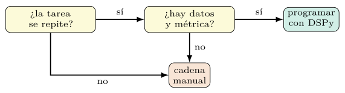
El resto del texto se ocupa de ese territorio: el de los sistemas que merecen programarse, donde la teoría de este capítulo deja de ser argumento y se vuelve método. El capítulo siguiente da el primer paso práctico —la anatomía de un prompt y el primer programa— y, a partir de ahí, cada parte del libro construye una pieza del compilador que aquí se ha justificado.
Un caso comparado.
Conviene aterrizar la tesis en un contraste concreto. Tómese una tarea menor: clasificar un mensaje como benigno o sospechoso. La vía artesanal redacta una cadena —«Eres un analista de seguridad; clasifica el siguiente mensaje como benigno o sospechoso: …»— y la retoca observando unos pocos casos hasta que parece funcionar. La vía declarativa escribe una firma y delega el resto al compilador:
import dspy
firma = "mensaje -> etiqueta: Literal['benigno','sospechoso']"
clasificar = dspy.ChainOfThought(firma)
compilado = dspy.MIPROv2(metric=f1).compile(clasificar, trainset=entreno)El contraste no está en las líneas de código, sino en sus propiedades, que la tabla 1.11 resume. La cadena manual no se mide —su «funciona» es una impresión—, codifica las rarezas de un modelo, y su mantenimiento depende de la memoria de quien la escribió. El programa compilado se mide sobre datos reservados, se reoptimiza al cambiar de modelo y guarda su estado como artefacto versionado.
| Propiedad | Prompt manual | Programa compilado |
|---|---|---|
| Objetivo medido | no | sí (métrica) |
| Defensa ante regresión | ninguna | conjunto reservado |
| Portabilidad de modelo | se reescribe | se recompila |
| Demostraciones | a ojo | buscadas y medidas |
| Reproducibilidad | frágil | estado versionado |
La lección del caso es, en pequeño, la del libro entero: ambas vías producen, el primer día, un clasificador que «funciona»; solo la segunda produce uno que se puede mejorar, defender y mantener. Esa diferencia —invisible en una demostración, decisiva en producción— es la razón de programar prompts.
Ecosistema y riesgos
Programar prompts con DSPy no ocurre en el vacío: convive con otras vías de construir sistemas con LLM, y situarlo entre ellas aclara su propuesta. La vía cruda llama a la API del proveedor y arma los mensajes a mano: máximo control, mínima estructura, y todo el peso del formato y el análisis sobre el programador (capítulo 3). Las vías de plantillas —las bibliotecas de orquestación más extendidas— encadenan llamadas con prompts escritos a mano e interpolados; ordenan el flujo, pero dejan el prompt como una cadena que se edita.
La vía declarativa y compilada de DSPy se distingue en un punto: el prompt no se escribe, se deriva de una firma y se optimiza contra una métrica (Khattab et al. 2024). No compite en encadenar llamadas —eso lo hace cualquier marco—, sino en que sus llamadas son optimizables. Esa es la frontera: las plantillas automatizan el flujo; DSPy automatiza, además, el contenido del prompt. Para un prototipo de un solo uso, una plantilla basta; para un sistema que se mide y se mantiene, la diferencia es decisiva. La tabla 1.12 sitúa las tres vías por esa frontera.
| Vía | El prompt | ¿Optimizable? |
|---|---|---|
| Cruda (API) | a mano, en el código | no |
| Plantillas | a mano, interpolado | no |
| DSPy (compilada) | derivado de una firma | sí |
Riesgos y límites.
La honestidad exige cerrar con las grietas del método. La primera es la dependencia de la métrica: un prompt compilado es tan bueno como la métrica que lo guió, y una métrica pobre produce un sistema que optimiza el indicador equivocado —la ley de Goodhart del capítulo 4—. La segunda es la fragilidad ante el cambio de modelo: una optimización ajustada a las rarezas de un modelo puede degradarse con otro, y obliga a reoptimizar en vez de fiar la portabilidad a la suerte. La tercera es el techo del modelo base: ningún prompt dota de una capacidad ausente (sección 1.1), de modo que hay tareas que no se resuelven programando, sino cambiando de modelo o ajustándolo. La tabla 1.13 resume los tres riesgos con su mitigación.
| Riesgo | Mitigación |
|---|---|
| Dependencia de la métrica | auditar \(\mu\); vigilar Goodhart |
| Fragilidad ante otro modelo | reoptimizar, no portar a ciegas |
| Techo del modelo base | cambiar de modelo o ajustarlo |
Reconocer estos límites no debilita la tesis: la delimita. Programar prompts es la herramienta adecuada para un territorio amplio —tareas repetidas, medibles, dentro del alcance del modelo—, y fuera de él conviene otra. El resto del libro trabaja dentro de ese territorio, con la cautela de medir siempre y de no prometer lo imposible.
Lecturas recomendadas
Khattab et al. (2024): el artículo donde se introduce el marco; leer las secciones que formalizan firmas, módulos y compilación.
Brown et al. (2020): la presentación del aprendizaje en contexto a gran escala, origen empírico del capítulo.
Xie et al. (2022) y Min et al. (2022): dos caras del ICL —la teórica y la empírica— que sostienen la moraleja sobre demostraciones.
Lu et al. (2022) y Zhao et al. (2021): la evidencia de fragilidad y de sesgo que desarma el ajuste a mano.
Sutton (2019): el ensayo que da el argumento de fondo, hoy cuantificado por Kaplan et al. (2020) y